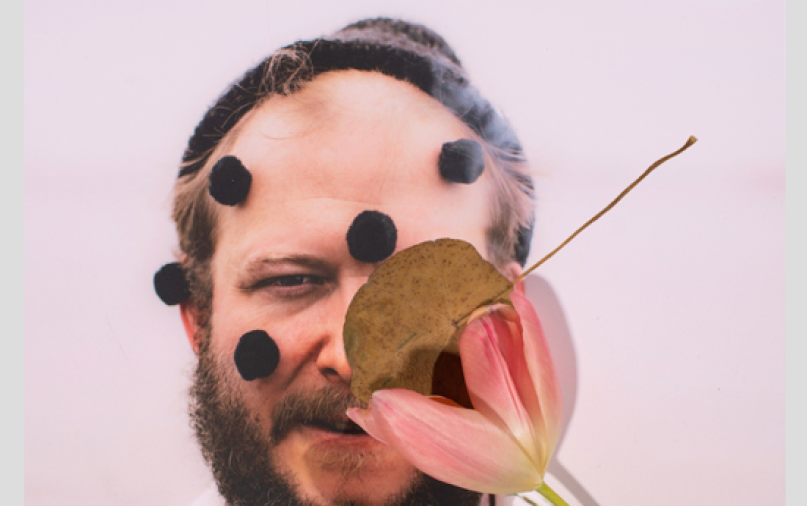

Bon Iver is an American Chamber Pop collective born out of the mind of the band's front man, Justin Vernon.
Bon Iver began as a one man project, when Justin Vernon escaped to a cabin in the woods, where he wrote and recorded his first full length album (For Emma, Forever Ago). The band quickly grew though and found themselves releasing an LP just one year later titled "Blood Bank". The band continued to tour and in 2011 they released their second full length lp known as Bon Iver. It was at this point that the band climbed the charts and began to be recognized for their creative sound and thought provoking lyrics, but just as they were coming into their own, the band annouhnced that they would be taking a hiatus indefinitely. And that was the band's passionate fans heard for many years but in 2015 the band played their first live show in over three years. Riding on the wave of this live performance he band began releasing news and music for a highly anticipated third album titled "22, A Million" and in late 2016 it was released to raving reviews. The band has continued to tour and create music. In August of 2019 the band released a triumphant fourth album that focuses on a brighter, and experimental sound.
Click here to visit their website